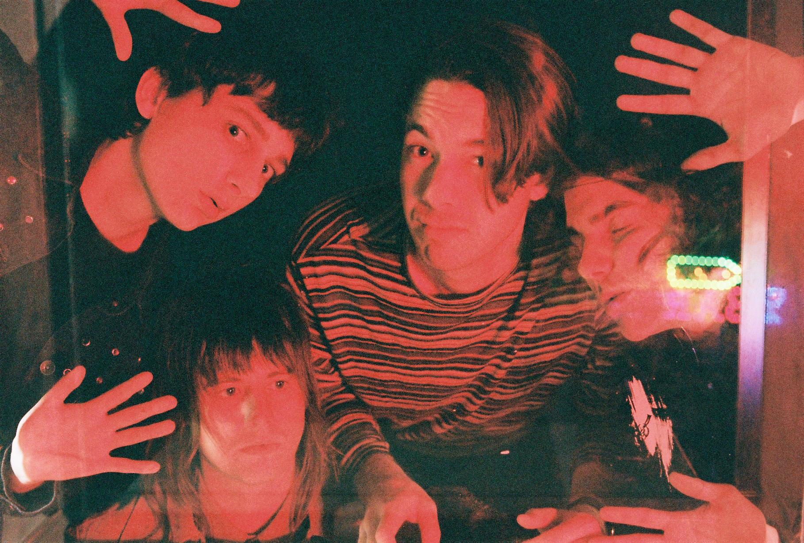

| The Creases share new single Impact 5 May 2016 |
|  |
Ever since stealing our hearts with I Won’t Wait, The Creases have been a welcome addition to the burgeoning Brisbane alternative scene, and continue to push themselves with new single Impact. While last year’s Point had an 80s alt vibe, Impact is a bouncy, noisy number that would fit right into the 90s brit pop world. Packed to the rim with jangly guitars, nonchalant vocals and blaring brass and strings, Impact is an impeccably effortless jam that sees The Creases stepping it up a notch with their songwriting. The Creases are launching Impact with a three date east coast tour in July. |